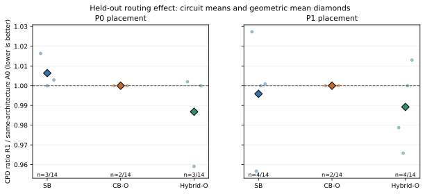
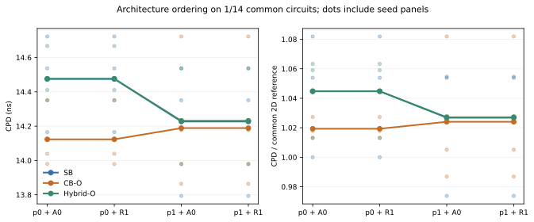
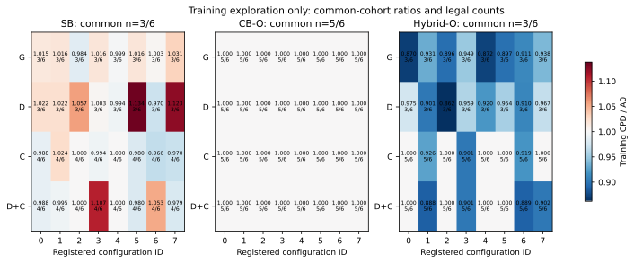
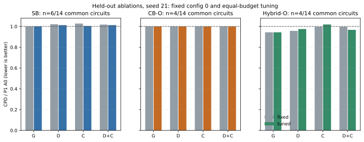
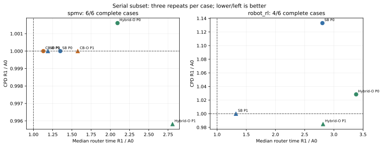

生成时间：2026-11-09T10:55:43.954010+00:00。本报告汇总已结束的登记实验；最终研究验收与证据封存另见完成记录。
R1 是本项目对固定官方 VTR 9 开发提交的路由修改；本轮 A0/R1/B2/P1 使用独立串行构建，不能称为原版二进制。P0 为 VTR 源码衍生布局，P1 为集成论文布局与 TritonPart、保留字面参数 0.03 的流程。每个布线对照共享图、打包网表及布局坐标。P1 的实际打包语义必须与共同输入匹配。
R1 根据同层可达性构建跨层候选，用几何或有预算的开关时延查询评估候选，结合关键性筛选和共享/拆分代理规划生成软引导。最终路径仍由时序与拥塞驱动路由器完成。该有限候选代理模型不等于全图 Steiner 最优解；当前范围限于两层和 clustered routing。
| 对象 | 身份 | 比较口径 |
|---|---|---|
| B1 | LaZagna 论文发表结果，VTR 8.1 | 保留作者二维分母；缺少共同绝对分母，直接 R1/B1 比率不计算 |
| B2 | LaZagna 后续移植 VTR 9 代码的作者分支 5abd3aca 的串行构建 | 与 A0、R1 使用同一物理图、打包网表和布局；属于工具链/路由器比较 |
| B3 / A0 | 官方 0b912334fdd83bb754b302146ac0d1ec9edc9a0e 的串行源码衍生构建 | 同输入的原生路由对照，并非原封的官方二进制 |
| R1off | 与 R1 相同的构建，关闭引导 | 串行子集控制构建差异；成功配对要求与 A0 的完整路径一致 |
B2 的版本元数据仍标为 8.1.0-dev，不能仅凭该字符串判断迁移状态。B1 论文表 IV 的 SB 100% / 66% / 33% CPD/作者二维 CPD 分别为 0.821 / 0.819 / 0.809，不能与本实验改善百分比相减。来源与适用条件见历史三基线报告。
| 项目 | 登记范围 |
|---|---|
| 训练 | 6 电路，seed 11；每种架构 4 个变体 × 8 组参数，576 条 R1 + 18 条 A0 |
| 主评估 | 14 电路，seeds 21/23/25；3 架构 × 2 布局 × A0/R1/B2，另有匹配容量 2D |
| 消融 | 14 电路，seed 21，P1；固定配置 0 与各变体同等预算调参 |
| 宽度敏感性 | W300：spmv、bnn 为训练用例；robot_rl、conv_layer_hls 为测试用例；参数从 W100 转移 |
| 串行计时 | spmv / robot_rl，3 架构 × 2 布局，每组 3 次；轮换 A0/R1/B2 顺序并增加 R1off |
| 测量执行约束 | 单 VPR worker，200 轮，关闭失败预测器；路由 1800 秒、布局 3600 秒；路由/布局测量进程虚拟地址空间上限 64 GiB |
| 已解析登记项 | 180 个案例、1206 个角色；1136 个独立路由运行 |
本次采用新划分与新种子；这些电路家族曾用于历史研究，不能称为此前完全未观察过的数据。相同输入及参数的角色可以引用同一运行，其复用不构成独立重复。
改善为 100×(1−R1/基线)，正值表示 CPD 降低。括号内采用匹配容量 2D；两组几何均值使用完全相同的完整电路集合。每个电路先平均三个种子的 CPD，再对电路比值取几何均值。改善/相同/退化计数使用所有配对合法种子样本。
| 架构 | 布局 | CPD 改善：3D (2D) | 完整电路 | 合法配对样本 | 改善/相同/退化 | 平面线长改善（自身配对集） |
|---|---|---|---|---|---|---|
| SB | P0 | -0.64% (-7.17%) | 3/14 | 23/42 | 9 / 4 / 10 | +0.10% [7/14] |
| SB | P1 | +0.41% (+0.89%) | 4/14 | 24/42 | 7 / 6 / 11 | +0.04% [8/14] |
| CB-O | P0 | +0.00% (+3.05%) | 2/14 | 11/42 | 0 / 11 / 0 | +0.00% [2/14] |
| CB-O | P1 | +0.00% (+4.28%) | 2/14 | 12/42 | 0 / 12 / 0 | +0.00% [2/14] |
| Hybrid-O | P0 | +1.32% (+0.35%) | 3/14 | 23/42 | 7 / 9 / 7 | +0.00% [6/14] |
| Hybrid-O | P1 | +1.08% (+1.05%) | 4/14 | 24/42 | 11 / 9 / 4 | +0.05% [8/14] |

在 3D 与 2D 均有合法配对的样本中选择最大 3D 改善。以下每行的两个数字绑定同一电路和种子；最大值不能代替整体表现。
| 架构 | 布局 | 电路 | seed | R1 CPD ns | 改善：3D (2D) |
|---|---|---|---|---|---|
| SB | P0 | tpu_like.small.os | 21 | 7.894 | +2.48% (+2.76%) |
| SB | P1 | reduction_layer | 21 | 10.275 | +8.17% (+9.08%) |
| CB-O | P0 | clstm_like.medium | 21 | 7.326 | +0.00% (-11.16%) |
| CB-O | P1 | clstm_like.medium | 23 | 6.598 | +0.00% (+2.52%) |
| Hybrid-O | P0 | clstm_like.small | 23 | 6.221 | +12.96% (+10.54%) |
| Hybrid-O | P1 | clstm_like.medium | 21 | 6.672 | +11.19% (-1.23%) |
同时展示 A0/B2，帮助区分本项目修改与工具链差异。
| 架构 | 布局 | 比较 | CPD 几何均值比 | 改善 | 完整电路 | 合法配对样本 |
|---|---|---|---|---|---|---|
| SB | P0 | R1/B2 | 0.993317 | +0.67% | 7/14 | 23/42 |
| SB | P0 | A0/B2 | 0.986873 | +1.31% | 7/14 | 23/42 |
| SB | P1 | R1/B2 | 1.016014 | -1.60% | 8/14 | 24/42 |
| SB | P1 | A0/B2 | 1.012321 | -1.23% | 8/14 | 24/42 |
| CB-O | P0 | R1/B2 | 1.006709 | -0.67% | 2/14 | 11/42 |
| CB-O | P0 | A0/B2 | 1.006709 | -0.67% | 2/14 | 11/42 |
| CB-O | P1 | R1/B2 | 0.994267 | +0.57% | 2/14 | 12/42 |
| CB-O | P1 | A0/B2 | 0.994267 | +0.57% | 2/14 | 12/42 |
| Hybrid-O | P0 | R1/B2 | 0.983915 | +1.61% | 6/14 | 23/42 |
| Hybrid-O | P0 | A0/B2 | 0.989835 | +1.02% | 7/14 | 24/42 |
| Hybrid-O | P1 | R1/B2 | 1.022709 | -2.27% | 8/14 | 24/42 |
| Hybrid-O | P1 | A0/B2 | 1.034992 | -3.50% | 8/14 | 24/42 |
| 架构 | 仅布局 P1A0/P0A0 改善 | 完整电路 | 组合 P1R1/P0A0 改善 (相对2D) | 完整电路 | 乘性交互比 | 交互完整电路 |
|---|---|---|---|---|---|---|
| SB | +6.40% | 7/14 | +7.47% (+1.46%) | 3/14 | 1.003990 | 7 |
| CB-O | +1.27% | 2/14 | +1.27% (+4.28%) | 2/14 | 1.000000 | 2 |
| Hybrid-O | +3.32% | 7/14 | +3.57% (+1.05%) | 4/14 | 0.993498 | 6 |
交互比为 (P1R1/P1A0)/(P0R1/P0A0)，小于 1 表示该共同样本中 P1 下相对布线收益更强；不自动构成显著性结论。仅布局、组合、交互各自使用的共同集合可能不同，集合详见统计 JSON。
架构排序统一使用 1/14 个共同完整电路。比较依据是最终绝对 CPD 或共同 2D 归一化值；各架构相对自身的改善百分比不用于排序。
| 流程 | CPD 从小到大 | SB ns | CB-O ns | Hybrid-O ns |
|---|---|---|---|---|
| p0_A0 | CB-O < SB < Hybrid-O | 14.475 | 14.123 | 14.476 |
| p0_R1 | CB-O < SB < Hybrid-O | 14.475 | 14.123 | 14.476 |
| p1_A0 | CB-O < SB < Hybrid-O | 14.227 | 14.189 | 14.231 |
| p1_R1 | CB-O < SB < Hybrid-O | 14.227 | 14.189 | 14.231 |

检测到的严格成对排序反转条目数：0。该计数包含不同流程比较，不等于独立实验数量；具体架构对与种子稳定性见统计 JSON。
参数仅依据训练集合选择：先最大化合法案例数，再在并列候选的共同成功集合比较 CPD，最后按路由耗时及固定顺序打破平局。八组设计点同时改变多个参数，可用于预算受限的搜索，不用于宣称某个单参数的因果效应。
| 架构 | 选中 R1 变体 | 配置号 | 各变体配置号 |
|---|---|---|---|
| SB | critical | 7 | geometry:2, delay:6, critical:7, delay_critical:5 |
| CB-O | critical | 4 | geometry:1, delay:4, critical:4, delay_critical:0 |
| Hybrid-O | delay_critical | 6 | geometry:0, delay:2, critical:3, delay_critical:6 |

| 架构 | 参数策略 | 变体 | 相对 P1 A0 的 CPD 改善 | 共同完整电路 |
|---|---|---|---|---|
| SB | fixed | geometry | +0.02% | 6/14 |
| SB | fixed | delay | -2.11% | 6/14 |
| SB | fixed | critical | -2.77% | 6/14 |
| SB | fixed | delay_critical | -1.78% | 6/14 |
| SB | tuned | geometry | -0.11% | 6/14 |
| SB | tuned | delay | -1.22% | 6/14 |
| SB | tuned | critical | -0.46% | 6/14 |
| SB | tuned | delay_critical | -1.28% | 6/14 |
| CB-O | fixed | geometry | +0.00% | 4/14 |
| CB-O | fixed | delay | +0.00% | 4/14 |
| CB-O | fixed | critical | +0.00% | 4/14 |
| CB-O | fixed | delay_critical | +0.00% | 4/14 |
| CB-O | tuned | geometry | +0.00% | 4/14 |
| CB-O | tuned | delay | +0.00% | 4/14 |
| CB-O | tuned | critical | +0.00% | 4/14 |
| CB-O | tuned | delay_critical | +0.00% | 4/14 |
| Hybrid-O | fixed | geometry | +5.63% | 4/14 |
| Hybrid-O | fixed | delay | +4.25% | 4/14 |
| Hybrid-O | fixed | critical | +0.38% | 4/14 |
| Hybrid-O | fixed | delay_critical | +0.38% | 4/14 |
| Hybrid-O | tuned | geometry | +5.63% | 4/14 |
| Hybrid-O | tuned | delay | +2.51% | 4/14 |
| Hybrid-O | tuned | critical | -1.89% | 4/14 |
| Hybrid-O | tuned | delay_critical | +3.29% | 4/14 |

| 配置号 | 候选 K | 偏离权重 | 开通权重 | 延迟查询预算 | 关键性阈值 |
|---|---|---|---|---|---|
| 0 | 8 | 2 | 8 | 4096 | 0.9 |
| 1 | 4 | 1 | 4 | 1024 | 0.7 |
| 2 | 4 | 4 | 16 | 16384 | 0.95 |
| 3 | 8 | 1 | 16 | 8192 | 0.8 |
| 4 | 8 | 4 | 4 | 1024 | 0.95 |
| 5 | 16 | 1 | 8 | 16384 | 0.9 |
| 6 | 16 | 2 | 16 | 4096 | 0.7 |
| 7 | 16 | 4 | 4 | 8192 | 0.8 |
上表为 D+C 的参数向量；G/C 关闭延迟候选评分，G/D 的关键性阈值固定为 0。完整环境变量以冻结协议为准。
训练阶段独立尝试：594；合法：414。失败保留在每组登记的六个电路分母中，失败运行输出的 CPD 不用于选参或性能统计。内存分配失败、进程超时和布线失败分别记录；分配失败本身不能证明布线问题无解，也不能定位具体分配点。
| 架构 | 路由器 | 变体 | 配置号 | 合法/登记电路 | 失败原因及数量 |
|---|---|---|---|---|---|
| SB | A0 | — | — | 4/6 | process_timeout: 1, routing_failure: 1 |
| SB | R1 | geometry | 0 | 3/6 | allocation_failure_under_registered_limit: 1, process_timeout: 1, routing_failure: 1 |
| SB | R1 | delay | 0 | 3/6 | allocation_failure_under_registered_limit: 1, process_timeout: 1, routing_failure: 1 |
| SB | R1 | critical | 0 | 4/6 | process_timeout: 1, routing_failure: 1 |
| SB | R1 | delay_critical | 0 | 4/6 | process_timeout: 1, routing_failure: 1 |
| SB | R1 | geometry | 1 | 3/6 | allocation_failure_under_registered_limit: 1, process_timeout: 1, routing_failure: 1 |
| SB | R1 | delay | 1 | 3/6 | allocation_failure_under_registered_limit: 1, process_timeout: 1, routing_failure: 1 |
| SB | R1 | critical | 1 | 4/6 | process_timeout: 1, routing_failure: 1 |
| SB | R1 | delay_critical | 1 | 4/6 | process_timeout: 1, routing_failure: 1 |
| SB | R1 | geometry | 2 | 3/6 | allocation_failure_under_registered_limit: 1, process_timeout: 1, routing_failure: 1 |
| SB | R1 | delay | 2 | 3/6 | allocation_failure_under_registered_limit: 1, process_timeout: 1, routing_failure: 1 |
| SB | R1 | critical | 2 | 4/6 | process_timeout: 1, routing_failure: 1 |
| SB | R1 | delay_critical | 2 | 4/6 | process_timeout: 1, routing_failure: 1 |
| SB | R1 | geometry | 3 | 3/6 | allocation_failure_under_registered_limit: 1, process_timeout: 1, routing_failure: 1 |
| SB | R1 | delay | 3 | 3/6 | allocation_failure_under_registered_limit: 1, process_timeout: 1, routing_failure: 1 |
| SB | R1 | critical | 3 | 4/6 | process_timeout: 1, routing_failure: 1 |
| SB | R1 | delay_critical | 3 | 4/6 | process_timeout: 1, routing_failure: 1 |
| SB | R1 | geometry | 4 | 3/6 | allocation_failure_under_registered_limit: 1, process_timeout: 1, routing_failure: 1 |
| SB | R1 | delay | 4 | 3/6 | allocation_failure_under_registered_limit: 1, process_timeout: 1, routing_failure: 1 |
| SB | R1 | critical | 4 | 4/6 | process_timeout: 1, routing_failure: 1 |
| SB | R1 | delay_critical | 4 | 4/6 | process_timeout: 1, routing_failure: 1 |
| SB | R1 | geometry | 5 | 3/6 | allocation_failure_under_registered_limit: 1, process_timeout: 1, routing_failure: 1 |
| SB | R1 | delay | 5 | 3/6 | allocation_failure_under_registered_limit: 1, process_timeout: 1, routing_failure: 1 |
| SB | R1 | critical | 5 | 4/6 | process_timeout: 1, routing_failure: 1 |
| SB | R1 | delay_critical | 5 | 4/6 | process_timeout: 1, routing_failure: 1 |
| SB | R1 | geometry | 6 | 3/6 | allocation_failure_under_registered_limit: 1, process_timeout: 1, routing_failure: 1 |
| SB | R1 | delay | 6 | 3/6 | allocation_failure_under_registered_limit: 1, process_timeout: 1, routing_failure: 1 |
| SB | R1 | critical | 6 | 4/6 | process_timeout: 1, routing_failure: 1 |
| SB | R1 | delay_critical | 6 | 4/6 | process_timeout: 1, routing_failure: 1 |
| SB | R1 | geometry | 7 | 3/6 | allocation_failure_under_registered_limit: 1, process_timeout: 1, routing_failure: 1 |
| SB | R1 | delay | 7 | 3/6 | allocation_failure_under_registered_limit: 1, process_timeout: 1, routing_failure: 1 |
| SB | R1 | critical | 7 | 4/6 | process_timeout: 1, routing_failure: 1 |
| SB | R1 | delay_critical | 7 | 4/6 | process_timeout: 1, routing_failure: 1 |
| CB-O | A0 | — | — | 5/6 | routing_failure: 1 |
| CB-O | R1 | geometry | 0 | 5/6 | routing_failure: 1 |
| CB-O | R1 | delay | 0 | 5/6 | routing_failure: 1 |
| CB-O | R1 | critical | 0 | 5/6 | routing_failure: 1 |
| CB-O | R1 | delay_critical | 0 | 5/6 | routing_failure: 1 |
| CB-O | R1 | geometry | 1 | 5/6 | routing_failure: 1 |
| CB-O | R1 | delay | 1 | 5/6 | routing_failure: 1 |
| CB-O | R1 | critical | 1 | 5/6 | routing_failure: 1 |
| CB-O | R1 | delay_critical | 1 | 5/6 | routing_failure: 1 |
| CB-O | R1 | geometry | 2 | 5/6 | routing_failure: 1 |
| CB-O | R1 | delay | 2 | 5/6 | routing_failure: 1 |
| CB-O | R1 | critical | 2 | 5/6 | routing_failure: 1 |
| CB-O | R1 | delay_critical | 2 | 5/6 | routing_failure: 1 |
| CB-O | R1 | geometry | 3 | 5/6 | routing_failure: 1 |
| CB-O | R1 | delay | 3 | 5/6 | routing_failure: 1 |
| CB-O | R1 | critical | 3 | 5/6 | routing_failure: 1 |
| CB-O | R1 | delay_critical | 3 | 5/6 | routing_failure: 1 |
| CB-O | R1 | geometry | 4 | 5/6 | routing_failure: 1 |
| CB-O | R1 | delay | 4 | 5/6 | routing_failure: 1 |
| CB-O | R1 | critical | 4 | 5/6 | routing_failure: 1 |
| CB-O | R1 | delay_critical | 4 | 5/6 | routing_failure: 1 |
| CB-O | R1 | geometry | 5 | 5/6 | routing_failure: 1 |
| CB-O | R1 | delay | 5 | 5/6 | routing_failure: 1 |
| CB-O | R1 | critical | 5 | 5/6 | routing_failure: 1 |
| CB-O | R1 | delay_critical | 5 | 5/6 | routing_failure: 1 |
| CB-O | R1 | geometry | 6 | 5/6 | routing_failure: 1 |
| CB-O | R1 | delay | 6 | 5/6 | routing_failure: 1 |
| CB-O | R1 | critical | 6 | 5/6 | routing_failure: 1 |
| CB-O | R1 | delay_critical | 6 | 5/6 | routing_failure: 1 |
| CB-O | R1 | geometry | 7 | 5/6 | routing_failure: 1 |
| CB-O | R1 | delay | 7 | 5/6 | routing_failure: 1 |
| CB-O | R1 | critical | 7 | 5/6 | routing_failure: 1 |
| CB-O | R1 | delay_critical | 7 | 5/6 | routing_failure: 1 |
| Hybrid-O | A0 | — | — | 5/6 | routing_failure: 1 |
| Hybrid-O | R1 | geometry | 0 | 3/6 | allocation_failure_under_registered_limit: 1, process_timeout: 1, routing_failure: 1 |
| Hybrid-O | R1 | delay | 0 | 3/6 | allocation_failure_under_registered_limit: 1, process_timeout: 1, routing_failure: 1 |
| Hybrid-O | R1 | critical | 0 | 5/6 | routing_failure: 1 |
| Hybrid-O | R1 | delay_critical | 0 | 5/6 | routing_failure: 1 |
| Hybrid-O | R1 | geometry | 1 | 3/6 | allocation_failure_under_registered_limit: 1, process_timeout: 1, routing_failure: 1 |
| Hybrid-O | R1 | delay | 1 | 3/6 | allocation_failure_under_registered_limit: 1, process_timeout: 1, routing_failure: 1 |
| Hybrid-O | R1 | critical | 1 | 5/6 | routing_failure: 1 |
| Hybrid-O | R1 | delay_critical | 1 | 5/6 | routing_failure: 1 |
| Hybrid-O | R1 | geometry | 2 | 3/6 | allocation_failure_under_registered_limit: 1, process_timeout: 1, routing_failure: 1 |
| Hybrid-O | R1 | delay | 2 | 3/6 | allocation_failure_under_registered_limit: 1, process_timeout: 1, routing_failure: 1 |
| Hybrid-O | R1 | critical | 2 | 5/6 | routing_failure: 1 |
| Hybrid-O | R1 | delay_critical | 2 | 5/6 | routing_failure: 1 |
| Hybrid-O | R1 | geometry | 3 | 3/6 | allocation_failure_under_registered_limit: 1, process_timeout: 1, routing_failure: 1 |
| Hybrid-O | R1 | delay | 3 | 3/6 | allocation_failure_under_registered_limit: 1, process_timeout: 1, routing_failure: 1 |
| Hybrid-O | R1 | critical | 3 | 5/6 | routing_failure: 1 |
| Hybrid-O | R1 | delay_critical | 3 | 5/6 | routing_failure: 1 |
| Hybrid-O | R1 | geometry | 4 | 3/6 | allocation_failure_under_registered_limit: 1, process_timeout: 1, routing_failure: 1 |
| Hybrid-O | R1 | delay | 4 | 3/6 | allocation_failure_under_registered_limit: 1, process_timeout: 1, routing_failure: 1 |
| Hybrid-O | R1 | critical | 4 | 5/6 | routing_failure: 1 |
| Hybrid-O | R1 | delay_critical | 4 | 5/6 | routing_failure: 1 |
| Hybrid-O | R1 | geometry | 5 | 3/6 | allocation_failure_under_registered_limit: 1, process_timeout: 1, routing_failure: 1 |
| Hybrid-O | R1 | delay | 5 | 3/6 | allocation_failure_under_registered_limit: 1, process_timeout: 1, routing_failure: 1 |
| Hybrid-O | R1 | critical | 5 | 5/6 | routing_failure: 1 |
| Hybrid-O | R1 | delay_critical | 5 | 5/6 | routing_failure: 1 |
| Hybrid-O | R1 | geometry | 6 | 3/6 | allocation_failure_under_registered_limit: 1, process_timeout: 1, routing_failure: 1 |
| Hybrid-O | R1 | delay | 6 | 3/6 | allocation_failure_under_registered_limit: 1, process_timeout: 1, routing_failure: 1 |
| Hybrid-O | R1 | critical | 6 | 5/6 | routing_failure: 1 |
| Hybrid-O | R1 | delay_critical | 6 | 5/6 | routing_failure: 1 |
| Hybrid-O | R1 | geometry | 7 | 3/6 | allocation_failure_under_registered_limit: 1, process_timeout: 1, routing_failure: 1 |
| Hybrid-O | R1 | delay | 7 | 3/6 | allocation_failure_under_registered_limit: 1, process_timeout: 1, routing_failure: 1 |
| Hybrid-O | R1 | critical | 7 | 5/6 | routing_failure: 1 |
| Hybrid-O | R1 | delay_critical | 7 | 5/6 | routing_failure: 1 |
| 架构 | 布局 | 数据划分 | 比较 | CPD 改善 | 完整电路 | 合法配对 |
|---|---|---|---|---|---|---|
| SB | P0 | training | vs_official | +0.08% | 2/2 | 2/2 |
| SB | P0 | training | vs_modern | +1.92% | 2/2 | 2/2 |
| SB | P0 | heldout | vs_official | +0.00% | 2/2 | 2/2 |
| SB | P0 | heldout | vs_modern | +0.00% | 2/2 | 2/2 |
| SB | P1 | training | vs_official | +0.66% | 2/2 | 2/2 |
| SB | P1 | training | vs_modern | +0.91% | 2/2 | 2/2 |
| SB | P1 | heldout | vs_official | +0.03% | 2/2 | 2/2 |
| SB | P1 | heldout | vs_modern | +0.38% | 2/2 | 2/2 |
| CB-O | P0 | training | vs_official | +0.00% | 2/2 | 2/2 |
| CB-O | P0 | training | vs_modern | +0.04% | 2/2 | 2/2 |
| CB-O | P0 | heldout | vs_official | +0.00% | 2/2 | 2/2 |
| CB-O | P0 | heldout | vs_modern | +0.00% | 2/2 | 2/2 |
| CB-O | P1 | training | vs_official | +0.00% | 2/2 | 2/2 |
| CB-O | P1 | training | vs_modern | +0.03% | 2/2 | 2/2 |
| CB-O | P1 | heldout | vs_official | +0.00% | 2/2 | 2/2 |
| CB-O | P1 | heldout | vs_modern | -0.26% | 2/2 | 2/2 |
| Hybrid-O | P0 | training | vs_official | +0.00% | 2/2 | 2/2 |
| Hybrid-O | P0 | training | vs_modern | +1.65% | 2/2 | 2/2 |
| Hybrid-O | P0 | heldout | vs_official | +0.00% | 2/2 | 2/2 |
| Hybrid-O | P0 | heldout | vs_modern | +0.59% | 2/2 | 2/2 |
| Hybrid-O | P1 | training | vs_official | +0.00% | 1/2 | 1/2 |
| Hybrid-O | P1 | training | vs_modern | +0.00% | 1/2 | 1/2 |
| Hybrid-O | P1 | heldout | vs_official | +0.00% | 2/2 | 2/2 |
| Hybrid-O | P1 | heldout | vs_modern | +0.00% | 2/2 | 2/2 |
| 阶段 | 架构 | 布局 | 角色 | 合法/登记 | 引脚筛选比例 | 完整延迟候选覆盖 | 查询截断比例 |
|---|---|---|---|---|---|---|---|
| heldout | CB-O | P0 | R1 | 11/42 | 0.14% (11/11) | — (0/11) | — (0/11) |
| heldout | CB-O | P1 | R1 | 12/42 | 0.01% (12/12) | — (0/12) | — (0/12) |
| heldout | CB-O | P1 | fixed_delay | 4/14 | 100.00% (4/4) | 23.17% (4/4) | 100.00% (4/4) |
| heldout | CB-O | P1 | fixed_delay_critical | 4/14 | 0.06% (4/4) | 24.46% (3/4) | 100.00% (3/4) |
| heldout | CB-O | P1 | tuned_delay | 4/14 | 100.00% (4/4) | 0.63% (4/4) | 100.00% (4/4) |
| heldout | CB-O | P1 | tuned_delay_critical | 4/14 | 0.06% (4/4) | 24.46% (3/4) | 100.00% (3/4) |
| heldout | Hybrid-O | P0 | R1 | 23/42 | 13.36% (23/23) | 0.11% (20/23) | 100.00% (20/23) |
| heldout | Hybrid-O | P1 | R1 | 24/42 | 6.96% (24/24) | 0.16% (24/24) | 100.00% (24/24) |
| heldout | Hybrid-O | P1 | fixed_delay | 5/14 | 100.00% (5/5) | 6.39% (5/5) | 100.00% (5/5) |
| heldout | Hybrid-O | P1 | fixed_delay_critical | 8/14 | 0.26% (8/8) | 0.99% (7/8) | 100.00% (7/8) |
| heldout | Hybrid-O | P1 | tuned_delay | 4/14 | 100.00% (4/4) | 75.74% (4/4) | 100.00% (4/4) |
| heldout | Hybrid-O | P1 | tuned_delay_critical | 8/14 | 7.52% (8/8) | 0.14% (8/8) | 100.00% (8/8) |
| heldout | SB | P0 | R1 | 23/42 | 4.91% (23/23) | — (0/23) | — (0/23) |
| heldout | SB | P1 | R1 | 24/42 | 1.31% (24/24) | — (0/24) | — (0/24) |
| heldout | SB | P1 | fixed_delay | 6/14 | 100.00% (6/6) | 5.75% (6/6) | 100.00% (6/6) |
| heldout | SB | P1 | fixed_delay_critical | 8/14 | 0.17% (8/8) | 1.70% (6/8) | 100.00% (6/8) |
| heldout | SB | P1 | tuned_delay | 6/14 | 100.00% (6/6) | 0.44% (6/6) | 100.00% (6/6) |
| heldout | SB | P1 | tuned_delay_critical | 8/14 | 0.17% (8/8) | 21.16% (6/8) | 100.00% (6/8) |
| width300 | CB-O | P0 | R1 | 4/4 | 0.19% (4/4) | — (0/4) | — (0/4) |
| width300 | CB-O | P1 | R1 | 4/4 | 0.07% (4/4) | — (0/4) | — (0/4) |
| width300 | Hybrid-O | P0 | R1 | 4/4 | 4.96% (4/4) | 0.00% (3/4) | 100.00% (3/4) |
| width300 | Hybrid-O | P1 | R1 | 3/4 | 1.58% (3/3) | 0.00% (3/3) | 100.00% (3/3) |
| width300 | SB | P0 | R1 | 4/4 | 3.39% (4/4) | — (0/4) | — (0/4) |
| width300 | SB | P1 | R1 | 4/4 | 0.93% (4/4) | — (0/4) | — (0/4) |
比例为合法运行内比例的算术均值，括号为该项有效运行数/合法运行数，不属于 CPD 统计。完整延迟覆盖要求前向、反向查询共同覆盖足够的 K 个候选；未启用延迟查询或分母为零时留空。查询预算耗尽表示未获知距离，不构成不可达证明。不同角色可能复用同一运行。
每个比值使用三次全部成功重复的中位数；不足三次保留覆盖数并留空。比值小于 1 表示 R1 更快。计时期间排除了本研究其它进程重叠，主机仍为共享环境。结论限于登记的两个电路，训练与测试结果分列。
| 电路 | 划分 | 架构 | 布局 | 比较 | 合法重复 | 路由时间比 | 整个路由进程时间比 |
|---|---|---|---|---|---|---|---|
| spmv | training | SB | P0 | R1_over_A0 | 3/3 | 1.349 | 1.120 |
| spmv | training | SB | P1 | R1_over_A0 | 3/3 | 1.188 | 1.050 |
| spmv | training | CB-O | P0 | R1_over_A0 | 3/3 | 1.129 | 1.047 |
| spmv | training | CB-O | P1 | R1_over_A0 | 3/3 | 1.576 | 1.156 |
| spmv | training | Hybrid-O | P0 | R1_over_A0 | 3/3 | 2.093 | 1.211 |
| spmv | training | Hybrid-O | P1 | R1_over_A0 | 3/3 | 2.809 | 1.313 |
| robot_rl | heldout | SB | P0 | R1_over_A0 | 3/3 | 2.804 | 1.295 |
| robot_rl | heldout | SB | P1 | R1_over_A0 | 3/3 | 1.323 | 1.075 |
| robot_rl | heldout | CB-O | P0 | R1_over_A0 | 0/3 | — | — |
| robot_rl | heldout | CB-O | P1 | R1_over_A0 | 0/3 | — | — |
| robot_rl | heldout | Hybrid-O | P0 | R1_over_A0 | 3/3 | 3.382 | 1.307 |
| robot_rl | heldout | Hybrid-O | P1 | R1_over_A0 | 3/3 | 2.815 | 1.215 |
| spmv | training | SB | P0 | R1_over_B2 | 3/3 | 1.480 | 1.046 |
| spmv | training | SB | P1 | R1_over_B2 | 3/3 | 1.385 | 1.047 |
| spmv | training | CB-O | P0 | R1_over_B2 | 3/3 | 1.348 | 0.990 |
| spmv | training | CB-O | P1 | R1_over_B2 | 3/3 | 1.717 | 1.055 |
| spmv | training | Hybrid-O | P0 | R1_over_B2 | 3/3 | 2.325 | 1.129 |
| spmv | training | Hybrid-O | P1 | R1_over_B2 | 3/3 | 3.046 | 1.169 |
| robot_rl | heldout | SB | P0 | R1_over_B2 | 3/3 | 2.375 | 1.163 |
| robot_rl | heldout | SB | P1 | R1_over_B2 | 3/3 | 0.906 | 0.910 |
| robot_rl | heldout | CB-O | P0 | R1_over_B2 | 0/3 | — | — |
| robot_rl | heldout | CB-O | P1 | R1_over_B2 | 0/3 | — | — |
| robot_rl | heldout | Hybrid-O | P0 | R1_over_B2 | 3/3 | 4.214 | 1.267 |
| robot_rl | heldout | Hybrid-O | P1 | R1_over_B2 | 3/3 | 2.669 | 1.117 |
| spmv | training | SB | P0 | R1_over_R1off | 3/3 | 1.354 | 1.117 |
| spmv | training | SB | P1 | R1_over_R1off | 3/3 | 1.180 | 1.055 |
| spmv | training | CB-O | P0 | R1_over_R1off | 3/3 | 1.237 | 1.015 |
| spmv | training | CB-O | P1 | R1_over_R1off | 3/3 | 1.256 | 1.086 |
| spmv | training | Hybrid-O | P0 | R1_over_R1off | 3/3 | 2.060 | 1.208 |
| spmv | training | Hybrid-O | P1 | R1_over_R1off | 3/3 | 2.722 | 1.288 |
| robot_rl | heldout | SB | P0 | R1_over_R1off | 3/3 | 2.709 | 1.285 |
| robot_rl | heldout | SB | P1 | R1_over_R1off | 3/3 | 1.255 | 1.061 |
| robot_rl | heldout | CB-O | P0 | R1_over_R1off | 0/3 | — | — |
| robot_rl | heldout | CB-O | P1 | R1_over_R1off | 0/3 | — | — |
| robot_rl | heldout | Hybrid-O | P0 | R1_over_R1off | 3/3 | 3.327 | 1.334 |
| robot_rl | heldout | Hybrid-O | P1 | R1_over_R1off | 3/3 | 2.669 | 1.184 |

| 电路 | 架构 | 布局 | 成功/3 | 准备进程中位秒 | 打包报告秒 | 实际划分秒 | 布局报告秒 |
|---|---|---|---|---|---|---|---|
| spmv | SB | P0 | 3 | 20.007 | — | — | — |
| spmv | SB | P1 | 3 | 24.415 | 3.950 | 0.846 | 6.660 |
| spmv | CB-O | P0 | 3 | 13.594 | — | — | — |
| spmv | CB-O | P1 | 3 | 17.550 | 3.620 | 0.840 | 6.760 |
| spmv | Hybrid-O | P0 | 3 | 20.357 | — | — | — |
| spmv | Hybrid-O | P1 | 3 | 24.914 | 3.870 | 0.838 | 6.600 |
| robot_rl | SB | P0 | 3 | 52.663 | — | — | — |
| robot_rl | SB | P1 | 3 | 70.745 | 8.970 | 5.995 | 24.670 |
| robot_rl | CB-O | P0 | 3 | 34.334 | — | — | — |
| robot_rl | CB-O | P1 | 3 | 55.569 | 8.940 | 6.014 | 26.460 |
| robot_rl | Hybrid-O | P0 | 3 | 53.542 | — | — | — |
| robot_rl | Hybrid-O | P1 | 3 | 71.247 | 9.110 | 6.035 | 24.090 |
P0 复用普查打包输入，P1 实际重新打包以构建关键性权重；两者的原始准备进程耗时代表各自执行工作，不能直接称为等工作量的跨流程端到端加速比。图生成、格式转换与物理审计为共享前置成本，未计入路由器速度比。R1/A0 与 R1/R1off 分别回答相对官方源码衍生的串行构建、相同构建内算法开销的问题。报告须单列计时方法及其开销；训练和评估期间的 ptrace 耗时不能作为无跟踪速度证据。
当前 OpenROAD 的分区上限为总权重乘以 (目标比例 + 参数×0.01)。字面参数 0.03 不代表相对均分容量允许 3% 偏差。spmv 训练诊断的 1337 个等权顶点在该参数下不存在满足约束的整数二分，工具仍返回成功及 1057∶280 的分区。因此，主矩阵中的 P1 不应描述为已验证的 3% 平衡流程，也不是作者实验环境的精确复现。
另行登记的 relative3 流程使用参数 1.5，表示两分区下相对均分容量 ±3%。修正组独立检查实际分区权重，未满足约束的结果保留为失败。字面组与修正组分开统计；同一布局内的 R1/A0 衡量布线贡献，同一路由器下的 relative3/literal 衡量布局参数修正影响。两种影响不能合并归因于布线算法。每个数据划分仅含两个电路，不据此宣称普遍的架构排序变化。
| 数据划分 | W | 架构 | 比较方向 | 登记配对 | 合法配对 | CPD 比率 |
|---|---|---|---|---|---|---|
| heldout | 100 | cb_o | literal R1/A0 | 2 | 1 | 1.000000 |
| heldout | 100 | cb_o | relative3 R1/A0 | 2 | 1 | 1.000000 |
| heldout | 100 | cb_o | A0 relative3/literal | 2 | 1 | 0.986702 |
| heldout | 100 | cb_o | R1 relative3/literal | 2 | 1 | 0.986702 |
| heldout | 100 | cb_o | B2 relative3/literal | 2 | 1 | 0.986702 |
| heldout | 100 | hybrid_o | literal R1/A0 | 2 | 2 | 0.992366 |
| heldout | 100 | hybrid_o | relative3 R1/A0 | 2 | 2 | 0.989351 |
| heldout | 100 | hybrid_o | A0 relative3/literal | 2 | 2 | 1.009114 |
| heldout | 100 | hybrid_o | R1 relative3/literal | 2 | 2 | 1.006048 |
| heldout | 100 | hybrid_o | B2 relative3/literal | 2 | 2 | 1.011305 |
| heldout | 100 | sb | literal R1/A0 | 2 | 2 | 1.000000 |
| heldout | 100 | sb | relative3 R1/A0 | 2 | 2 | 0.995516 |
| heldout | 100 | sb | A0 relative3/literal | 2 | 2 | 1.003555 |
| heldout | 100 | sb | R1 relative3/literal | 2 | 2 | 0.999055 |
| heldout | 100 | sb | B2 relative3/literal | 2 | 2 | 1.007221 |
| heldout | 300 | cb_o | literal R1/A0 | 2 | 2 | 1.000000 |
| heldout | 300 | cb_o | relative3 R1/A0 | 2 | 2 | 1.000000 |
| heldout | 300 | cb_o | A0 relative3/literal | 2 | 2 | 0.969130 |
| heldout | 300 | cb_o | R1 relative3/literal | 2 | 2 | 0.969130 |
| heldout | 300 | cb_o | B2 relative3/literal | 2 | 2 | 0.971658 |
| heldout | 300 | hybrid_o | literal R1/A0 | 2 | 2 | 1.000000 |
| heldout | 300 | hybrid_o | relative3 R1/A0 | 2 | 2 | 1.000000 |
| heldout | 300 | hybrid_o | A0 relative3/literal | 2 | 2 | 1.001749 |
| heldout | 300 | hybrid_o | R1 relative3/literal | 2 | 2 | 1.001749 |
| heldout | 300 | hybrid_o | B2 relative3/literal | 2 | 2 | 1.001749 |
| heldout | 300 | sb | literal R1/A0 | 2 | 2 | 0.999673 |
| heldout | 300 | sb | relative3 R1/A0 | 2 | 2 | 1.000000 |
| heldout | 300 | sb | A0 relative3/literal | 2 | 2 | 1.036412 |
| heldout | 300 | sb | R1 relative3/literal | 2 | 2 | 1.036752 |
| heldout | 300 | sb | B2 relative3/literal | 2 | 2 | 1.032834 |
| training | 100 | cb_o | literal R1/A0 | 2 | 1 | 1.000000 |
| training | 100 | cb_o | relative3 R1/A0 | 2 | 1 | 1.000000 |
| training | 100 | cb_o | A0 relative3/literal | 2 | 1 | 0.941498 |
| training | 100 | cb_o | R1 relative3/literal | 2 | 1 | 0.941498 |
| training | 100 | cb_o | B2 relative3/literal | 2 | 1 | 1.010623 |
| training | 100 | hybrid_o | literal R1/A0 | 2 | 2 | 0.994770 |
| training | 100 | hybrid_o | relative3 R1/A0 | 2 | 2 | 1.000000 |
| training | 100 | hybrid_o | A0 relative3/literal | 2 | 2 | 1.019636 |
| training | 100 | hybrid_o | R1 relative3/literal | 2 | 2 | 1.024996 |
| training | 100 | hybrid_o | B2 relative3/literal | 2 | 2 | 1.026066 |
| training | 100 | sb | literal R1/A0 | 2 | 2 | 1.000000 |
| training | 100 | sb | relative3 R1/A0 | 2 | 2 | 1.000362 |
| training | 100 | sb | A0 relative3/literal | 2 | 2 | 0.988480 |
| training | 100 | sb | R1 relative3/literal | 2 | 2 | 0.988838 |
| training | 100 | sb | B2 relative3/literal | 2 | 2 | 1.000968 |
| training | 300 | cb_o | literal R1/A0 | 2 | 2 | 1.000000 |
| training | 300 | cb_o | relative3 R1/A0 | 2 | 2 | 1.000000 |
| training | 300 | cb_o | A0 relative3/literal | 2 | 2 | 1.007579 |
| training | 300 | cb_o | R1 relative3/literal | 2 | 2 | 1.007579 |
| training | 300 | cb_o | B2 relative3/literal | 2 | 2 | 1.007234 |
| training | 300 | hybrid_o | literal R1/A0 | 2 | 1 | 1.000000 |
| training | 300 | hybrid_o | relative3 R1/A0 | 2 | 1 | 1.000000 |
| training | 300 | hybrid_o | A0 relative3/literal | 2 | 2 | 0.999520 |
| training | 300 | hybrid_o | R1 relative3/literal | 2 | 1 | 0.996662 |
| training | 300 | hybrid_o | B2 relative3/literal | 2 | 2 | 0.971741 |
| training | 300 | sb | literal R1/A0 | 2 | 2 | 0.993381 |
| training | 300 | sb | relative3 R1/A0 | 2 | 2 | 0.996624 |
| training | 300 | sb | A0 relative3/literal | 2 | 2 | 1.042826 |
| training | 300 | sb | R1 relative3/literal | 2 | 2 | 1.046231 |
| training | 300 | sb | B2 relative3/literal | 2 | 2 | 1.039526 |
| 角色状态 | 数量 |
|---|---|
| failed | 455 |
| legal | 581 |
| timeout | 170 |
| 独立路由状态 | 数量 |
|---|---|
| failed | 423 |
| legal | 552 |
| timeout | 161 |
| 阶段 | 架构 | 布局 | 角色 | 原因 | 数量 |
|---|---|---|---|---|---|
| heldout | cb_o | p0 | A0 | process_timeout | 4 |
| heldout | cb_o | p0 | A0 | routing_failure | 27 |
| heldout | cb_o | p0 | B2 | process_timeout | 4 |
| heldout | cb_o | p0 | B2 | routing_failure | 27 |
| heldout | cb_o | p0 | R1 | process_timeout | 4 |
| heldout | cb_o | p0 | R1 | routing_failure | 27 |
| heldout | cb_o | p1 | A0 | process_timeout | 3 |
| heldout | cb_o | p1 | A0 | routing_failure | 27 |
| heldout | cb_o | p1 | B2 | process_timeout | 3 |
| heldout | cb_o | p1 | B2 | routing_failure | 27 |
| heldout | cb_o | p1 | R1 | process_timeout | 3 |
| heldout | cb_o | p1 | R1 | routing_failure | 27 |
| heldout | cb_o | p1 | fixed_critical | process_timeout | 1 |
| heldout | cb_o | p1 | fixed_critical | routing_failure | 9 |
| heldout | cb_o | p1 | fixed_delay | process_timeout | 1 |
| heldout | cb_o | p1 | fixed_delay | routing_failure | 9 |
| heldout | cb_o | p1 | fixed_delay_critical | process_timeout | 1 |
| heldout | cb_o | p1 | fixed_delay_critical | routing_failure | 9 |
| heldout | cb_o | p1 | fixed_geometry | process_timeout | 1 |
| heldout | cb_o | p1 | fixed_geometry | routing_failure | 9 |
| heldout | cb_o | p1 | tuned_critical | process_timeout | 1 |
| heldout | cb_o | p1 | tuned_critical | routing_failure | 9 |
| heldout | cb_o | p1 | tuned_delay | process_timeout | 1 |
| heldout | cb_o | p1 | tuned_delay | routing_failure | 9 |
| heldout | cb_o | p1 | tuned_delay_critical | process_timeout | 1 |
| heldout | cb_o | p1 | tuned_delay_critical | routing_failure | 9 |
| heldout | cb_o | p1 | tuned_geometry | process_timeout | 1 |
| heldout | cb_o | p1 | tuned_geometry | routing_failure | 9 |
| heldout | hybrid_o | p0 | A0 | process_timeout | 8 |
| heldout | hybrid_o | p0 | A0 | routing_failure | 10 |
| heldout | hybrid_o | p0 | B2 | process_timeout | 9 |
| heldout | hybrid_o | p0 | B2 | routing_failure | 9 |
| heldout | hybrid_o | p0 | R1 | allocation_failure_under_registered_limit | 1 |
| heldout | hybrid_o | p0 | R1 | process_timeout | 9 |
| heldout | hybrid_o | p0 | R1 | routing_failure | 9 |
| heldout | hybrid_o | p1 | A0 | process_timeout | 6 |
| heldout | hybrid_o | p1 | A0 | routing_failure | 12 |
| heldout | hybrid_o | p1 | B2 | process_timeout | 6 |
| heldout | hybrid_o | p1 | B2 | routing_failure | 12 |
| heldout | hybrid_o | p1 | R1 | process_timeout | 7 |
| heldout | hybrid_o | p1 | R1 | routing_failure | 11 |
| heldout | hybrid_o | p1 | fixed_critical | process_timeout | 2 |
| heldout | hybrid_o | p1 | fixed_critical | routing_failure | 4 |
| heldout | hybrid_o | p1 | fixed_delay | allocation_failure_under_registered_limit | 6 |
| heldout | hybrid_o | p1 | fixed_delay | process_timeout | 1 |
| heldout | hybrid_o | p1 | fixed_delay | routing_failure | 2 |
| heldout | hybrid_o | p1 | fixed_delay_critical | process_timeout | 2 |
| heldout | hybrid_o | p1 | fixed_delay_critical | routing_failure | 4 |
| heldout | hybrid_o | p1 | fixed_geometry | allocation_failure_under_registered_limit | 6 |
| heldout | hybrid_o | p1 | fixed_geometry | process_timeout | 1 |
| heldout | hybrid_o | p1 | fixed_geometry | routing_failure | 2 |
| heldout | hybrid_o | p1 | tuned_critical | process_timeout | 2 |
| heldout | hybrid_o | p1 | tuned_critical | routing_failure | 4 |
| heldout | hybrid_o | p1 | tuned_delay | allocation_failure_under_registered_limit | 6 |
| heldout | hybrid_o | p1 | tuned_delay | process_timeout | 1 |
| heldout | hybrid_o | p1 | tuned_delay | routing_failure | 3 |
| heldout | hybrid_o | p1 | tuned_delay_critical | process_timeout | 2 |
| heldout | hybrid_o | p1 | tuned_delay_critical | routing_failure | 4 |
| heldout | hybrid_o | p1 | tuned_geometry | allocation_failure_under_registered_limit | 6 |
| heldout | hybrid_o | p1 | tuned_geometry | process_timeout | 1 |
| heldout | hybrid_o | p1 | tuned_geometry | routing_failure | 2 |
| heldout | matched_2d | p0 | A0 | process_timeout | 3 |
| heldout | matched_2d | p0 | A0 | routing_failure | 22 |
| heldout | sb | p0 | A0 | process_timeout | 8 |
| heldout | sb | p0 | A0 | routing_failure | 11 |
| heldout | sb | p0 | B2 | process_timeout | 8 |
| heldout | sb | p0 | B2 | routing_failure | 10 |
| heldout | sb | p0 | R1 | process_timeout | 9 |
| heldout | sb | p0 | R1 | routing_failure | 10 |
| heldout | sb | p1 | A0 | process_timeout | 10 |
| heldout | sb | p1 | A0 | routing_failure | 8 |
| heldout | sb | p1 | B2 | process_timeout | 10 |
| heldout | sb | p1 | B2 | routing_failure | 8 |
| heldout | sb | p1 | R1 | process_timeout | 10 |
| heldout | sb | p1 | R1 | routing_failure | 8 |
| heldout | sb | p1 | fixed_critical | process_timeout | 4 |
| heldout | sb | p1 | fixed_critical | routing_failure | 2 |
| heldout | sb | p1 | fixed_delay | allocation_failure_under_registered_limit | 5 |
| heldout | sb | p1 | fixed_delay | process_timeout | 2 |
| heldout | sb | p1 | fixed_delay | routing_failure | 1 |
| heldout | sb | p1 | fixed_delay_critical | process_timeout | 4 |
| heldout | sb | p1 | fixed_delay_critical | routing_failure | 2 |
| heldout | sb | p1 | fixed_geometry | allocation_failure_under_registered_limit | 5 |
| heldout | sb | p1 | fixed_geometry | process_timeout | 2 |
| heldout | sb | p1 | fixed_geometry | routing_failure | 1 |
| heldout | sb | p1 | tuned_critical | process_timeout | 4 |
| heldout | sb | p1 | tuned_critical | routing_failure | 2 |
| heldout | sb | p1 | tuned_delay | allocation_failure_under_registered_limit | 5 |
| heldout | sb | p1 | tuned_delay | process_timeout | 2 |
| heldout | sb | p1 | tuned_delay | routing_failure | 1 |
| heldout | sb | p1 | tuned_delay_critical | process_timeout | 4 |
| heldout | sb | p1 | tuned_delay_critical | routing_failure | 2 |
| heldout | sb | p1 | tuned_geometry | allocation_failure_under_registered_limit | 4 |
| heldout | sb | p1 | tuned_geometry | process_timeout | 3 |
| heldout | sb | p1 | tuned_geometry | routing_failure | 1 |
| width300 | hybrid_o | p1 | R1 | process_timeout | 1 |
上述角色计数保留未启动的下游角色与明确的复用关系；独立运行计数用于区分实际尝试。合法路由同时要求 VPR FULL 和独立的有向边、开关、树及 RR 节点容量审计。独立审计的范围不替代 FULL 的全部检查。
三种 3D 架构采用显式派生的共同平面图，保留原跨层连接与时延；这是控制模型，不是未经改动的作者架构。2D 与 3D 的逻辑容量一致，但芯片形状、IO 密度与平面线资源不同。Hybrid-O 增加 CB 连接，未建立等面积、等功耗或等独立垂直连接预算。模型导线 R/C 为零，开关时延仍保留；测量采用理想时钟。结果不构成实体 FPGA 或比特流验证。
| 模型 | CLB | DSP | BRAM | IO | 2D/3D 平面线容量 | SB 配对数 | CB 跨层源 OPIN 数 |
|---|---|---|---|---|---|---|---|
| n100_w100 | 14308 | 2548 | 2352 | 6272 | 1.002886 | 1771192 | 431984 |
| n125_w100 | 22632 | 3936 | 3690 | 7872 | 0.998230 | 2773552 | 673056 |
| n125_w300 | 22632 | 3936 | 3690 | 7872 | 0.998230 | 8365096 | 673056 |
| n200_w100 | 58608 | 9900 | 9900 | 12672 | 1.005558 | 7122568 | 1727352 |
| n40_w100 | 2128 | 380 | 380 | 2432 | 1.002024 | 278488 | 67032 |
| n40_w300 | 2128 | 380 | 380 | 2432 | 1.002024 | 840224 | 67032 |
| n60_w100 | 4988 | 928 | 812 | 3712 | 1.018703 | 633000 | 154744 |
| n60_w300 | 4988 | 928 | 812 | 3712 | 1.018703 | 1908624 | 154744 |
| n80_w100 | 9048 | 1560 | 1560 | 4992 | 1.008763 | 1130552 | 273312 |
| n80_w300 | 9048 | 1560 | 1560 | 4992 | 1.008763 | 3409344 | 273312 |
平面线长排除 CHANX/NONE 的 SB 半节点。CB 跨层边共享源 OPIN 和接收通道容量，边数不能直接当作独立物理过孔数。
冻结实验协议 · 训练选择及证据绑定 · 完整统计 · 逐角色 CSV · 串行明细 · 原论文公开数据重算 · 研究验收项目